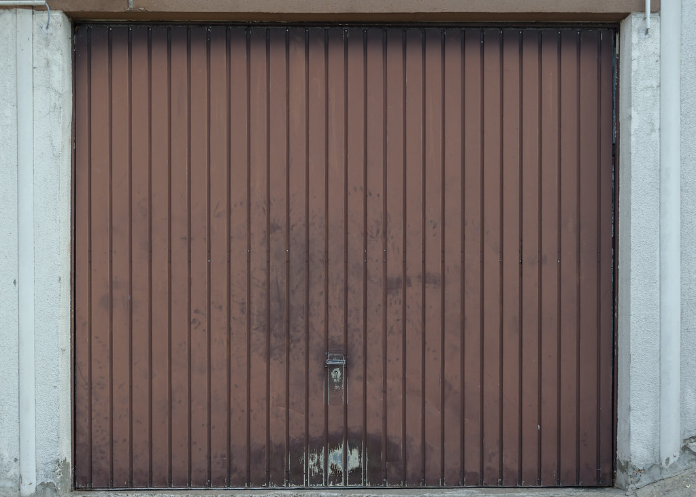
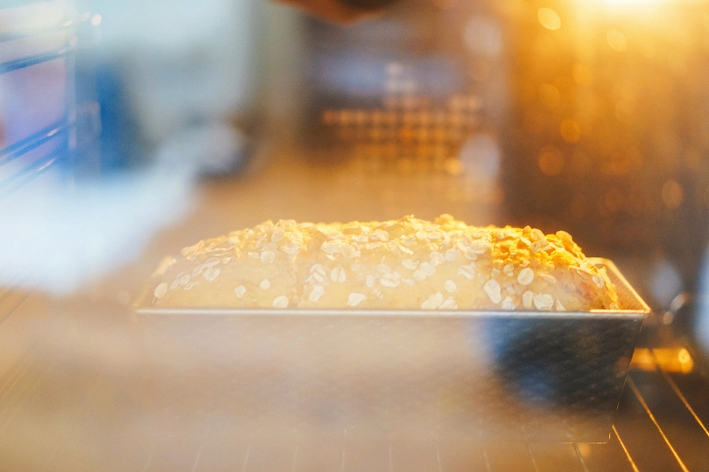
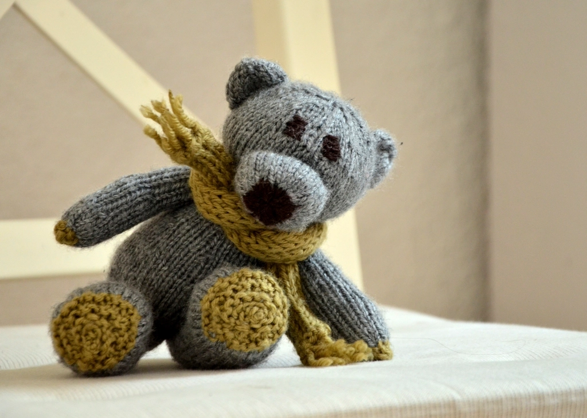
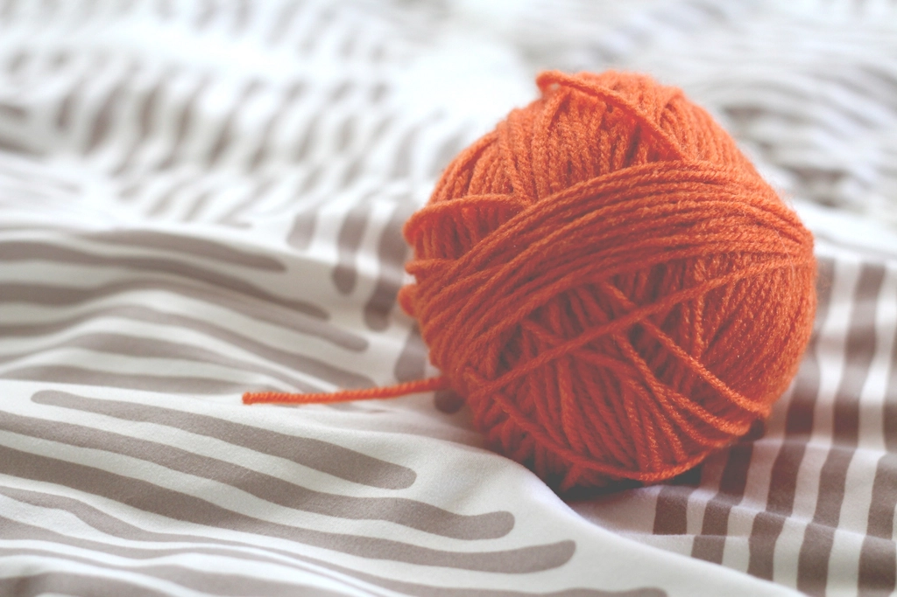

こだわりの物語
Cafe Batakeは、ガレージだった建物を改装してつくったカフェです。
オーナーが焼くケーキと、奥様が編む手編みぐるみ。ご夫婦それぞれの手仕事が、この店の時間をつくっています。

ガレージを改装した店
Cafe Batakeがあるのは、もとはガレージだった建物です。
コンクリートの壁やシャッターの質感はそのままに、店内はあたたかい時間が流れる空間へと生まれ変わりました。
無骨な器の中に、ゆっくりと流れる午後のひととき。ガレージだったからこそ生まれた、この店らしい佇まいです。

オーナーの手作りケーキ
店の看板であるケーキは、オーナーがひとつずつ手作りしています。
シフォンケーキ、プリン、バスク風チーズケーキ。どれも同じオーブンから、丁寧に焼き上げられて届きます。
気さくな人柄のオーナーとお話ししながら過ごす時間も、Cafe Batakeの魅力のひとつです。

奥様の手編みぐるみ
店内を見渡すと、あちこちに奥様手作りの編みぐるみが飾られています。
ひと針ひと針編まれたその姿は、どこか懐かしく、あたたかい表情をしています。
ケーキを待つあいだ、店内を彩る手編みの作品を眺めるのも、この店ならではの楽しみ方です。
手編みぐるみ奥様の手仕事

地元の情報番組で紹介されたこともあります
Cafe Batakeは、地元の情報番組で紹介されたこともあります。
放送のタイミングでご来店くださったお客様と、その喜びを分かち合えたこともあり、私たちにとっても嬉しい出来事でした。
これからも、地域のみなさまに愛される一軒でありたいと思っています。
お客様の声より
店内も奥様の可愛い手作り編みぐるみグッズがたくさんあって素敵です。
素敵なご夫婦が経営されています!手編みの作品が店内にたくさんあってお洒落でした!
ご来店・お問い合わせ
ご来店前のご確認は、お電話またはInstagramにて承っております。